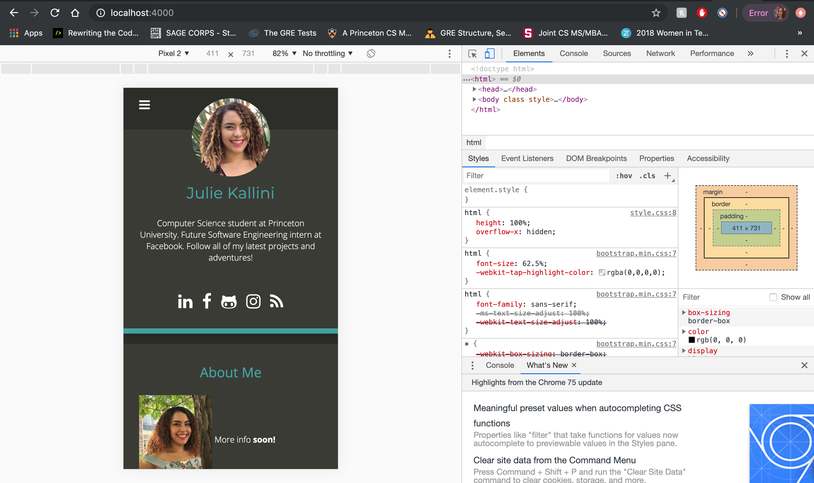

Owning 7 Phones at Once
No, I don’t actually own 7 phones. But working on this website lead me to a discovery about how I could simulate having several devices at once.
Carte Noire is a beautiful theme, but, like most Jekyll themes, it is tailored to hosting blogs. Since I’m building my website mainly to host my resume and portfolio, I’ve been working directly with HTML and CSS to achieve the look I want, rather than simply using Markdown.
Dealing with Configuration Changes
As I was editing the About Me section of my homepage, I wanted to ensure that my page was mobile friendly, and that the images and text would be displayed nicely on mobile devices. At first, I had to push my changes in order to view the updated website on my phone. I noticed that my image would trail off of the “About Me” card:
It was getting pretty troublesome trying to debug the mobile display without being able to test it before pushing. I dabbled with some solutions that involved running my Mac’s localhost on my iPhone, but it turns out that there’s an even better answer.
Chrome DevTools
This probably comes as no surprise for anyone who’s done some web development already,
but Chrome DevTools blew my mind when I started using it.
Chrome DevTools allows you to view and interact with the HTML and CSS of basically
any website. With a simple press of F12, I’m taken to a new pane where I can view my
website on a range of devices, not just an iPhone! Now I can easily diagnose layout
issues on lower-resolution displays locally.

So no, I don’t really own 7 phones, but I think this has been a worthwhile discovery for me anyway.